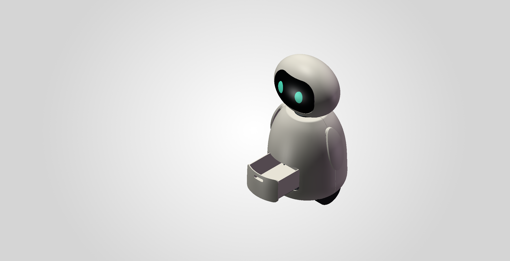
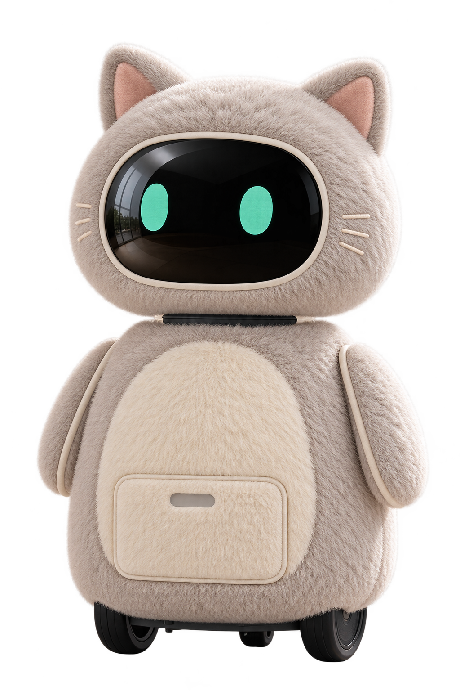
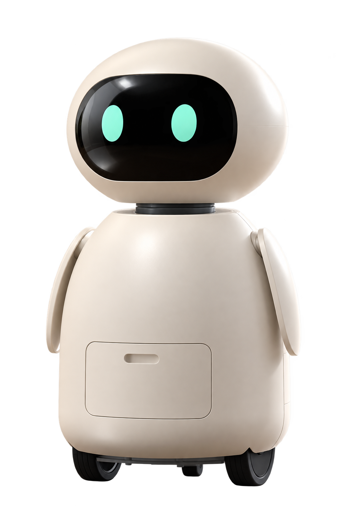
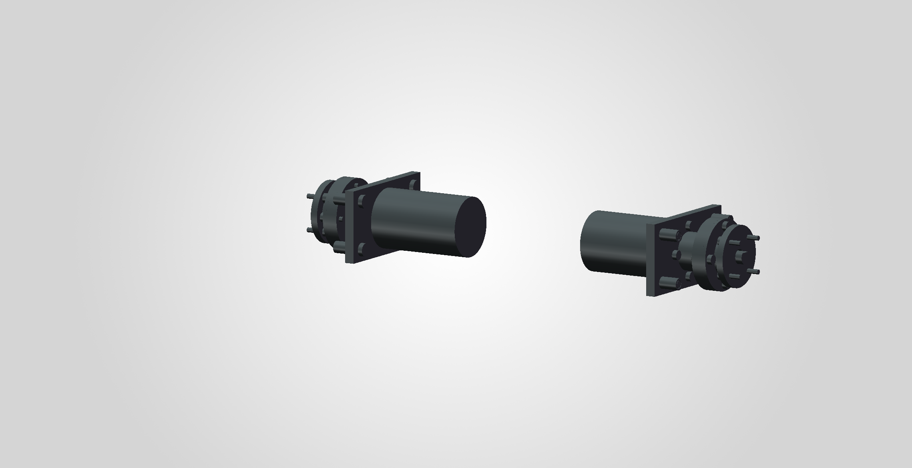
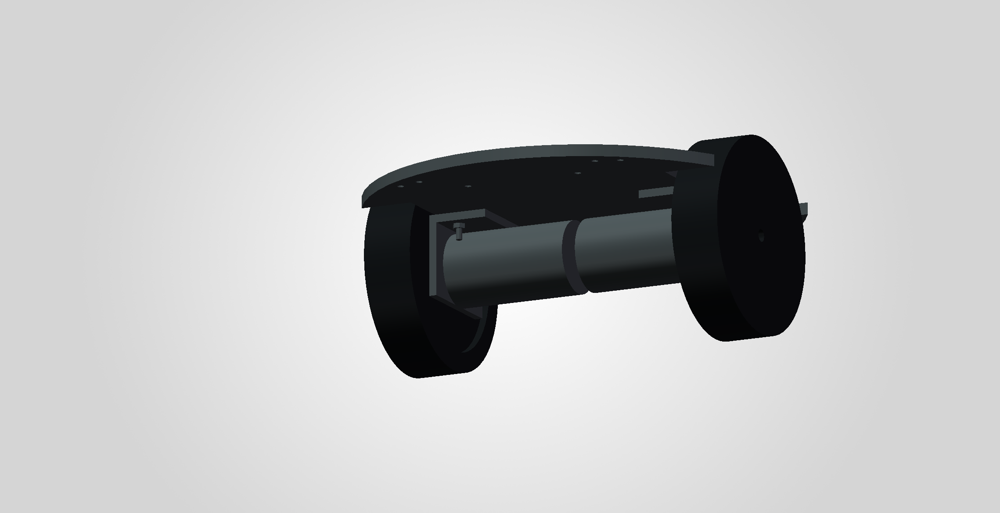

前置抽屉 · 底部双导轨
保留取物空间与导轨结构，概念行程 90 mm，继续验证实际取放与操作体验。
Meet Tuantuan / 认识团团
饱满的头、贴身的双臂，还有一双薄荷绿眼睛。
以同一套轮式结构，探索两种融入家庭的外观。
短猫耳、柔软细绒与浅色肚皮，保留黑色面屏、可见轮子和取物入口。外套样板与实际适配尚待设计验证。
奶白圆润外壳、短颈和贴身双臂。以 V7 原生三维模型为依据，继续推进装配与实物体验验证。


尺寸来自当前 V7 原生 CAD；毛绒外套与猫耳的成衣尺寸尚未确定。AI 商品图用于外观表达，局部轮廓可能与精确三维几何存在差异。
Inside the prototype / 三维结构基础
三维原型已建立头部、分体外壳、底盘、轮组、内藏肩部传动与抽屉结构。下图为 SOLIDWORKS 实际视图。

保留取物空间与导轨结构，概念行程 90 mm，继续验证实际取放与操作体验。

电机、支架与连接件向内布置，让薄片状曲面双臂贴近身体；真实电机接口仍待选型校准。

主轮 Ø100×25 mm、轮中心距 168 mm。结构作为基础受控移动原型的下一步集成起点。
当前为结构概念设计，名义主壳厚 3 mm。真实硬件尺寸、服装适配、强度、重心与稳定性、连续运动、制造公差及完整功能仍需后续验证。
The way forward / 走向可体验
四人团队将协同前后端、机械、程序与需求验证能力，把基础受控移动、语音提醒、基础姿态识别与家属联络机制逐步接起来。我们希望团团最终成为老人愿意用、家属能协同的陪伴入口。